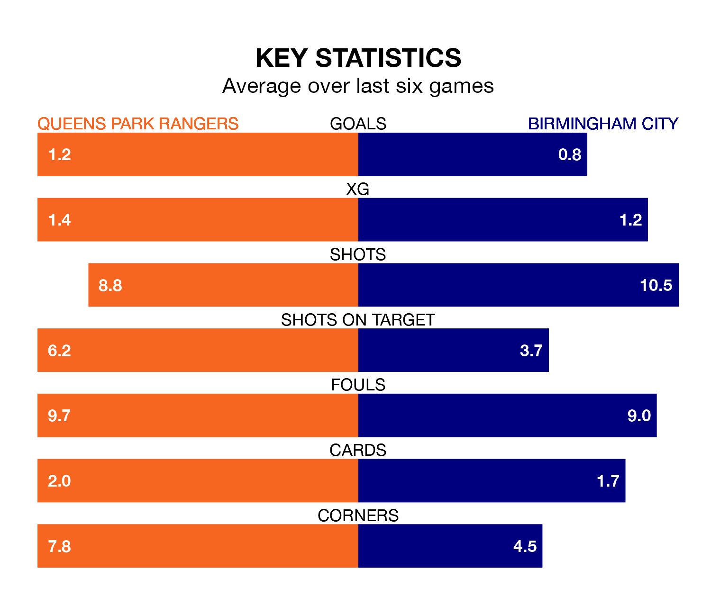

Birmingham City come to Loftus Road to play Queens Park Rangers on Friday in terrible form, having collected just one point from their last six games.
The visitors have drawn just one of their last six fixtures, while QPR have three wins and two draws.
In the last 10 years, QPR and Birmingham have played each other on 17 occasions. QPR won seven of them, Birmingham five, and they drew five times.
On average, QPR scored 1.5 goals and the Blues 1.1 in those matches.
Their last meeting was on September 22, when they played out a 0-0 draw.
Birmingham are 21st in the table after 38 games, of which they have won 10 and drawn nine, earning 39 points.
QPR are one place ahead of City in 20th, with 10 wins and 10 draws putting them on 40 points.
In Asmir Begović, Rangers can rely on one of the league's safest pair of hands. He has kept 10 clean sheets in his 38 appearances this season in EFL Championship.
In the Blues' net, John Ruddy has seven clean sheets in 36 games. He has conceded a goal every 66 minutes, 10% more often than the 71 minutes between goals for Begović.
With 36 goals in 38 games so far this season, the home team are scoring at below the league average rate with 0.9 goals per game. But they are conceding fewer than average too, letting in 50 goals at a rate of 1.3 per game.
The visitors are also below average scorers, with 1.1 goals per game, compared to a league average of 1.4. They have conceded 1.6 goals per game.
QPR's last match was on March 16, a 0-0 draw against Sunderland.
Birmingham lost 1-0 against Watford last time out, also on March 16.
Updated: 10:19 (UTC), 22/03/24